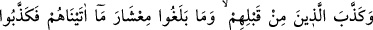
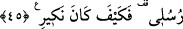

Sonra Allah Teâlâ onları tehdit etmiş ve şöyle buyurmuştur:
45. Onlardan öncekiler de (peygamberlerini) inkâr etmişlerdi. Bunlar, öncekilere
verdiklerimizin onda birine erişmemişlerdi. (Böyle
iken),
peygamberimi
yalanladılar; ama benim karşılık olarak verdiğim nasıl olmuştu!
Senin kavmin Kureyş’in inkâr ettiği gibi “Onlardan önceki” geçmiş ümmetler ve
nesiller “de (peygamberlerini) inkâr etmişlerdi.” Halbuki “Bunlar” Kureyş ve Mekke
müşrikleri, vücûdlarının kuvveti, mallarının ve evlâdların çokluğu, ömürlerinin
uzunluğu bakımından “öncekilere verdiklerimizin onda birine erişmemişlerdi. (Böyle
iken), peygamberlerimi yalanladılar; ama benim karşılık olarak verdiğim” köklerini
kurutmak ve helâk etmek sûretiyle benim onları inkârım ve azâbım “nasıl olmuştu!”
Onların yanında bu Mekke müşriklerinin kıymeti vardır?! Öyleyse onlar gibi bir cezaya
uğramaktan sakınsınlar.
Bu âyetlerde şuna işâret edilmektedir: Nazar (akıl ve düşünce) sâhibi biri insanları
Allah’a delâlet ve dâvet edince onun kötü dostları, câhil kardeşleri, akrabalarından ve
dünya ehlinden gafil yardımcıları, -hatta bunlar dünya sevgisinin kendilerini sarhoş
ettiği kötü âlimler bile olur ki Peygamberimiz (s.a.) onlar hakkında “Onlar kullarımın
yolunu kesenlerdir.”[41] buyurmuştur- işte bütün bu insanlar bu kimseye şöyle sözler
söylerler: “Bu adam sizi avlamak, onun tâbii, yardımcı ve müridleri olmanız için sizi
kendisine tâbi kılmak istiyor. Sizi mezhebinizden/gittiğiniz yoldan çevirmek istiyor.
Mallarınıza tamah ediyor. Dünyayı tamamen terk etmeye, akrabasından, âilesinden
ayrılmaya, çocuklarını zâyi etmeye, anne babasına âsî olmaya kim güç yetirebilir? Bu
yol hak yol değil. Sen bu işi tamamlayamazsın. Yaşadığın sürece sana dünyalık
lâzımdır.” Bu zavallı kimse Allah’a yönelme ve dünyadan yüz çevirme konusunda
kendisine yapılan nasihati kabulden vazgeçene kadar buna benzer sözler söylerler. Belki
bu düşünceler kişinin kendi alçak kuruntuları, âdî nefsinin vesveselerinden de
kaynaklanabilir. Onların yollarını sapıtıp helak oldukları gibi o da sapıtıp helâk olur.
İşte tâlib kendisinden önceki meşâyihın münkirlerinden ve peygamber vârislerini
yalanlayanlardan ibret alsın. Onların işlerinin sonu, dünyada dinin mertebelerinden
mahrumiyet ve âhirette ayrılık ateşiyle azab görmekten başka bir şey değildir. Tâlib
kendisini hak âşıklarının yolundan alıkoyanlara kulak asmaktan sakınsın. Çünkü onlar
kendisinin dostlar sûretinde görünen düşmanlarıdır.
Mesnevî’de şöyle der: